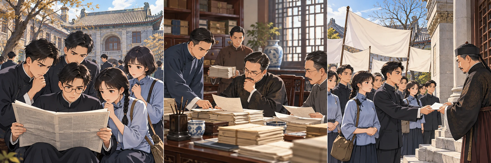
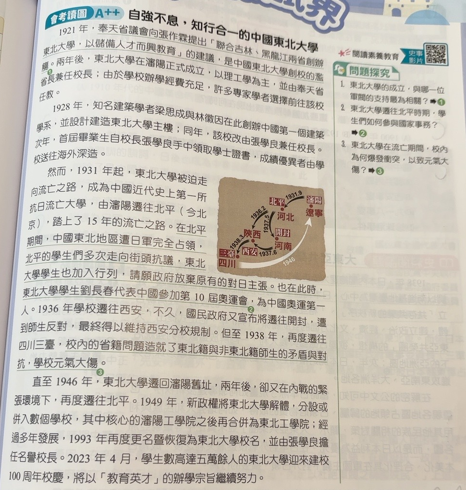
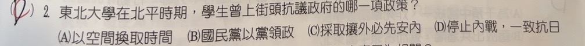

分享原卷｜第2題
完整原題
作答所需文章／材料
【自強不息，知行合一的中國東北大學】 1921年，奉天省議會向張作霖提出「聯合吉林、黑龍江兩省創辦東北大學，以儲備人才而興教育」的建議，是中國東北大學創校的濫觴。兩年後，東北大學在瀋陽正式成立，以理工學為主，並由奉天省省長兼任校長；由於學校辦學經費充足，許多專家學者選擇前往該校任教。 1928年，知名建築學者梁思成與林徽因在此創辦中國第一個建築學系，並設計建造東北大學主樓；同年，該校改由張學良兼任校長。次年，首屆畢業生自校長張學良手中領取學士證書，成績優異者由學校送往海外深造。 然而，1931年起，東北大學被迫走向流亡之路，成為中國近代史上第一所抗日流亡大學，由瀋陽遷往北平（今北京），踏上了15年的流亡之路。在北平期間，中國東北地區遭日軍完全占領，北平的學生們多次走向街頭抗議，東北大學學生也加入行列，請願政府放棄原有的對日主張。也在此時，東北大學學生劉長春代表中國參加第10屆奧運會，為中國奧運第一人。1936年學校遷往西安，不久，國民政府又宣布將遷往開封，遭到師生反對，最終得以維持西安分校規制。但至1938年，再度遷往四川三臺，校內的省籍問題造成了東北籍與非東北籍師生的矛盾與對抗，學校元氣大傷。 直至1946年，東北大學遷回瀋陽舊址，兩年後，卻又在內戰的緊張環境下，再度遷往北平。1949年，新政權將東北大學解體，分設或併入數個學校，其中核心的瀋陽工學院之後再合併為東北工學院；經過多年發展，1993年再度更名暨恢復為東北大學校名，並由張學良擔任名譽校長。2023年4月，學生數高達五萬餘人的東北大學迎來建校100周年校慶，將以「教育英才」的辦學宗旨繼續努力。東北大學在北平時期，學生曾上街頭抗議政府的哪一項政策？
(A) 以空間換取時間
(B) 國民黨以黨領政
(C) 採取攘外必先安內
(D) 停止內戰，一致抗日
先想一想，再查看答案、解說與原圖
正確答案：C。學生要求政府積極抗日，抗議的是優先處理內部問題的「攘外必先安內」政策。
逐項解析
| 選項與原句 | 判讀 | 句意與判斷理由 |
|---|---|---|
| (A) 以空間換取時間 | 不選 | 主要是全面抗戰的戰略方針，不是本文學生要求政府放棄的對日主張。 |
| (B) 國民黨以黨領政 | 不選 | 文章談東北遭占領與要求積極抗日，沒有以黨政關係作為抗議焦點。 |
| (C) 採取攘外必先安內 | 應選 | 先處理內部問題的政策，與學生要求停止內戰、積極抗日的訴求相反。 |
| (D) 停止內戰，一致抗日 | 不選 | 這是學生期待的方向，不是他們反對的政策。 |
詳細說明與解題步驟
一、先找文章中「反對什麼」的證據
文章說中國東北已遭日軍完全占領，北平學生多次走向街頭，請願政府放棄原有的對日主張。這反映學生要求政府改變優先處理內部問題、對外採退讓的方針，對應C「攘外必先安內」。
二、反對的政策不等於希望採行的主張
D「停止內戰，一致抗日」是學生希望政府採取的方向，不是他們上街抗議、要求放棄的政策。本題問「抗議哪項政策」，不能把支持與反對看反。
三、其餘選項的差別
A「以空間換取時間」是全面抗戰時利用戰略退守爭取長期作戰時間的方針，與此處要求積極抗日的學生運動線索不同。B談黨與政府的關係，文章並沒有以此作為請願原因。
本題依完整原卷閱讀材料與四選項判斷，不以重疊的作答、批改筆跡當作標準答案。

① 東北失陷，學生要求抗日
文章說東北已遭日軍完全占領，北平學生上街請願，要政府放棄原有的對日主張。先抓出「希望改變現有政策」。
② 抗議的是攘外必先安內
「攘外必先安內」把處理內部問題排在抵抗外敵之前。學生要求積極抗日，因此反對這種先安內的優先順序。
③ 停止內戰，是希望的方向
D「停止內戰，一致抗日」是學生的訴求。題目問反對哪項政策，不是問學生支持什麼；兩者不能看反。
④ 反對先安內，要求一致抗日
答案 C：採取攘外必先安內
- 反對的政策：先安內，再攘外。
- 希望的方向：停止內戰，一致抗日。
- 看清題目動詞是「抗議」，不能選成支持的主張。
核對註記：已實看原卷完整閱讀材料、題幹及四選項；依文意核對答案C。作答與批改筆跡重疊，不作標準答案來源。冊章無對應證據，歸綜合。
原圖（僅本題）

